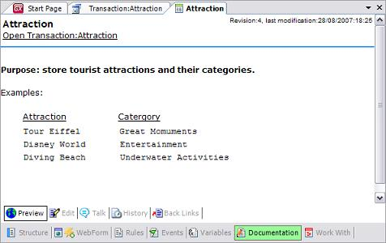

Most GeneXus objects have a section to write documentation. All the documentation sources inside the Knowledge Base make up a wiki-like documentation system. The Documentation Editor is a WYSIWYG editor that can be accessed at the Object level, through the 'Documentation' object's selector, as shown in the following transaction: 
|